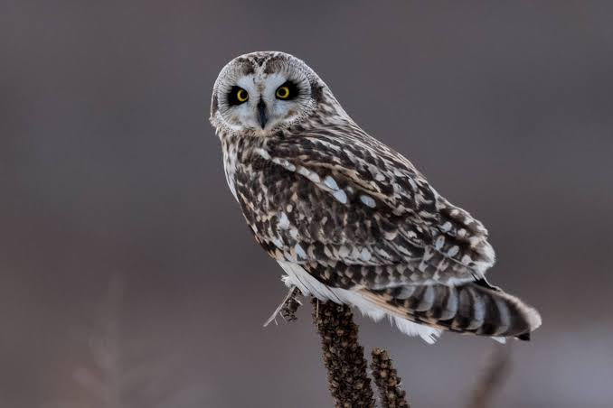

Owl
Birds
Owls are birds from the order Strigiformes, which includes about 200 species of mostly solitary and nocturnal birds of prey typified by an upright stance, a large, broad head, binocular vision, binaural hearing, sharp talons, and feathers adapted for silent flight.
Scientific name: Strigiformes
Class: Aves
Order: Strigiformes; Wagler, 1830
Kingdom: Animalia
Mass: Barn owl: 430 – 620 g, Snowy owl: 2 kg, MORE Encyclopedia of Life
Length: Barn owl: 32 – 40 cm, Snowy owl: 63 – 73 cm,
Owl, (order Strigiformes), any member of a homogeneous order of primarily nocturnal raptors found nearly worldwide.
The bird of Athena, the Greek goddess of practical reason, is the little owl (Athene noctua).
Owls became symbolic of intelligence because it was thought that they presaged events. On the other hand, because of their nocturnal existence and ominous hooting sounds, owls have also been symbols associated with the occult and the otherworldly.
Their secretive habits, quiet flight, and haunting calls have made them the objects of superstition and even fear in many parts of the world. In the Middle Ages the little owl was used as a symbol of the “darkness” before the coming of Christ; by further extension it was used to symbolize a nonbeliever who dwells in this darkness.
Similarly the barn owl (Tyto alba) was looked upon as a bird of ill omen, and it subsequently became a symbol of disgrace. Scientific study of owls is difficult owing to their silent nighttime activity, with the result that the ecology, behaviour, and taxonomy of many species remain poorly understood.
The size range of owls is about the same as that of their day-active counterparts, the hawks, with lengths of about 13–70 cm (5–28 inches) and wingspans between 0.3–2.0 metres (1–6.6 feet). Most owl species are at the lower end of the size range.
Owls apparently feed only on animals. Rodents are the most common prey; the smaller species, however, eat insects. All owls have the same general appearance, which is characterized by a flat face with a small hooked beak and large, forward-facing eyes.
The tail is short and the wings are rounded. Like the diurnal birds of prey (order Falconiformes), they have large feet with sharp talons. Diversity occurs in size, in the presence or absence of “ear” tufts, and in the shape of the plumage around the face.
Biology of Owl
Anatomy
Owls possess large, forward-facing eyes and ear-holes, a hawk-like beak, a flat face, and usually a conspicuous circle of feathers, a facial disc, around each eye. The feathers making up this disc can be adjusted to sharply focus sounds from varying distances onto the owls' asymmetrically placed ear cavities.
Most birds of prey have eyes on the sides of their heads, but the stereoscopic nature of the owl's forward-facing eyes permits the greater sense of depth perception necessary for low-light hunting.
Although owls have binocular vision, their large eyes are fixed in their sockets—as are those of most other birds—so they must turn their entire heads to change views. As owls are farsighted, they are unable to clearly see anything within a few centimeters of their eyes.
Caught prey can be felt by owls with the use of filoplumes—hairlike feathers on the beak and feet that act as "feelers". Their far vision, particularly in low light, is exceptionally good.
Owls can rotate their heads and necks as much as 270°. Owls have 14 neck vertebrae compared to seven in humans, which makes their necks more flexible.
They also have adaptations to their circulatory systems, permitting rotation without cutting off blood to the brain: the foramina in their vertebrae through which the vertebral arteries pass are about 10 times the diameter of the artery, instead of about the same size as the artery as in humans;
the vertebral arteries enter the cervical vertebrae higher than in other birds, giving the vessels some slack, and the carotid arteries unite in a very large anastomosis or junction, the largest of any bird's, preventing blood supply from being cut off while they rotate their necks. Other anastomoses between the carotid and vertebral arteries support this effect
Sexual dimorphism
Sexual dimorphism is a physical difference between males and females of a species. Reverse sexual dimorphism, when females are larger than males, has been observed across multiple owl species.
The degree of size dimorphism varies across multiple populations and species, and is measured through various traits, such as wing span and body mass. Overall, female owls tend to be slightly larger than males. The exact explanation for this development in owls is unknown. However, several theories explain the development of sexual dimorphism in owls.
One theory suggests that selection has led males to be smaller because it allows them to be efficient foragers. The ability to obtain more food is advantageous during breeding season. In some species, female owls stay at their nest with their eggs while it is the responsibility of the male to bring back food to the nest. However, if food is scarce, the male first feeds himself before feeding the female.
Small birds, which are agile, are an important source of food for owls. Male burrowing owls have been observed to have longer wing chords than females, despite being smaller than females. Furthermore, owls have been observed to be roughly the same size as their prey.
This has also been observed in other predatory birds, which suggests that owls with smaller bodies and long wing chords have been selected for because of the increased agility and speed that allows them to catch their prey.
Flight and feathers
Most owls share an innate ability to fly almost silently and also more slowly in comparison to other birds of prey. Most owls live a mainly nocturnal lifestyle and being able to fly without making any noise gives them a strong advantage over their prey that are listening for the slightest sound in the night.
A silent, slow flight is not as necessary for diurnal and crepuscular owls given that prey can usually see an owl approaching. While the morphological and biological mechanisms of this silent flight are more or less unknown, the structure of the feather
has been heavily studied and accredited to a large portion of why they have this ability. Owls’ feathers are generally larger than the average birds’ feathers, have fewer radiates, longer pennulum, and achieve smooth edges with different rachis structures.
Serrated edges along the owl's remiges bring the flapping of the wing down to a nearly silent mechanism. The serrations are more likely reducing aerodynamic disturbances, rather than simply reducing noise.
The surface of the flight feathers is covered with a velvety structure that absorbs the sound of the wing moving. These unique structures reduce noise frequencies above 2 kHz, making the sound level emitted drop below the typical hearing spectrum of the owl's usual prey and also within the owl's own best hearing range.
This optimizes the owl's ability to silently fly to capture prey without the prey hearing the owl first as it flies in. It also allows the owl to monitor the sound output from its flight pattern.
Vision
Eyesight is a particular characteristic of the owl that aids in nocturnal prey capture. Owls are part of a small group of birds that live nocturnally, but do not use echolocation to guide them in flight in low-light situations.
Owls are known for their disproportionally large eyes in comparison to their skulls. An apparent consequence of the evolution of an absolutely large eye in a relatively small skull is that the eye of the owl has become tubular in shape.
This shape is found in other so-called nocturnal eyes, such as the eyes of strepsirrhine primates and bathypelagic fishes. Since the eyes are fixed into these sclerotic tubes, they are unable to move the eyes in any direction.
Instead of moving their eyes, owls swivel their heads to view their surroundings. Owls' heads are capable of swiveling through an angle of roughly 270°, easily enabling them to see behind them without relocating the torso.
This ability keeps bodily movement at a minimum, thus reduces the amount of sound the owl makes as it waits for its prey. Owls are regarded as having the most frontally placed eyes among all avian groups, which gives them some of the largest binocular fields of vision. However, owls are farsighted and cannot focus on objects within a few centimeters of their eyes.
Hearing
Owls exhibit specialized hearing functions and ear shapes that also aid in hunting. They are noted for asymmetrical ear placements on the skull in some genera. Owls can have either internal or external ears, both of which are asymmetrical.
Asymmetry has not been reported to extend to the middle or internal ear of the owl. Asymmetrical ear placement on the skull allows the owl to pinpoint the location of its prey. This is especially true for strictly nocturnal species such as the barn owls Tyto or Tengmalm's owl.
With ears set at different places on its skull, an owl is able to determine the direction from which the sound is coming by the minute difference in time that it takes for the sound waves to penetrate the left and right ears.
[citation needed] The owl turns its head until the sound reaches both ears at the same time, at which point it is directly facing the source of the sound. This time difference between ears is a matter of about 0.00003 seconds, or 30 millionths of a second.
Behind the ear openings are modified, dense feathers, densely packed to form a facial ruff, which creates an anterior-facing, concave wall that cups the sound into the ear structure.
This facial ruff is poorly defined in some species, and prominent, nearly encircling the face, in other species. The facial disk also acts to direct sound into the ears, and a downward-facing, sharply triangular beak minimizes sound reflection away from the face. The shape of the facial disk is adjustable at will to focus sounds more effectively.
The prominences above a great horned owl's head are commonly mistaken as its ears. This is not the case; they are merely feather tufts. The ears are on the sides of the head in the usual location (in two different locations as described above).
Talons
While the auditory and visual capabilities of the owl allow it to locate and pursue its prey, the talons and beak of the owl do the final work. The owl kills its prey using these talons to crush the skull and knead the body.
The crushing power of an owl's talons varies according to prey size and type, and by the size of the owl. The burrowing owl (Athene cunicularia), a small, partly insectivorous owl, has a release force of only 5 N.
The larger barn owl (Tyto alba) needs a force of 30 N to release its prey, and one of the largest owls, the great horned owl (Bubo virginianus) needs a force over 130 N to release prey in its talons.An owl's talons, like those of most birds of prey, can seem massive in comparison to the body size outside of flight.
The Tasmanian masked owl has some of the proportionally longest talons of any bird of prey; they appear enormous in comparison to the body when fully extended to grasp prey.
An owl's claws are sharp and curved. The family Tytonidae has inner and central toes of about equal length, while the family Strigidae has an inner toe that is distinctly shorter than the central one. These different morphologies allow efficiency in capturing prey specific to the different environments they inhabit.
Beak
The beak of the owl is short, curved, and downward-facing, and typically hooked at the tip for gripping and tearing its prey. Once prey is captured, the scissor motion of the top and lower bill is used to tear the tissue and kill.
The sharp lower edge of the upper bill works in coordination with the sharp upper edge of the lower bill to deliver this motion. The downward-facing beak allows the owl's field of vision to be clear, as well as directing sound into the ears without deflecting sound waves away from the face.[citation needed]
Behavior
Most owls are nocturnal, actively hunting their prey in darkness. Several types of owls, however, are crepuscular—active during the twilight hours of dawn and dusk; one example is the pygmy owl (Glaucidium). A few owls are active during the day, also; examples are the burrowing owl (Speotyto cunicularia) and the short-eared owl (Asio flammeus).
Much of the owls' hunting strategy depends on stealth and surprise. Owls have at least two adaptations that aid them in achieving stealth. First, the dull coloration of their feathers can render them almost invisible under certain conditions.
Secondly, serrated edges on the leading edge of owls' remiges muffle an owl's wing beats, allowing an owl's flight to be practically silent. Some fish-eating owls, for which silence has no evolutionary advantage, lack this adaptation.
Evolution and systematics
The systematic placement of owls is disputed. For example, the Sibley–Ahlquist taxonomy of birds finds that, based on DNA-DNA hybridization, owls are more closely related to the nightjars and their allies (Caprimulgiformes) than to the diurnal predators in the order Falconiformes.
consequently, the Caprimulgiformes are placed in the Strigiformes, and the owls in general become a family, the Strigidae. A recent study indicates that the drastic rearrangement of the genome of the accipitrids may have obscured any close relationship of theirs with groups such as the owls.
In any case, the relationships of the Caprimulgiformes, the owls, the falcons, and the accipitrid raptors are not resolved to satisfaction; currently, a trend to consider each group (with the possible exception of the accipitrids) as a distinct order is increasing.
Some 220 to 225 extant species of owls are known, subdivided into two families: 1. Typical owls or True owl family (Strigidae) and 2. barn-owls family (Tytonidae).
Some entirely extinct families have also been erected based on fossil remains; these differ much from modern owls in being less specialized or specialized in a very different way (such as the terrestrial Sophiornithidae).
The Paleocene genera Berruornis and Ogygoptynx show that owls were already present as a distinct lineage some 60–57 million years ago (Mya), hence, possibly also some 5 million years earlier, at the extinction of the nonavian dinosaurs. This makes them one of the oldest known groups of non-Galloanserae landbirds. The supposed "Cretaceous owls" Bradycneme and Heptasteornis are apparently nonavialan maniraptors.